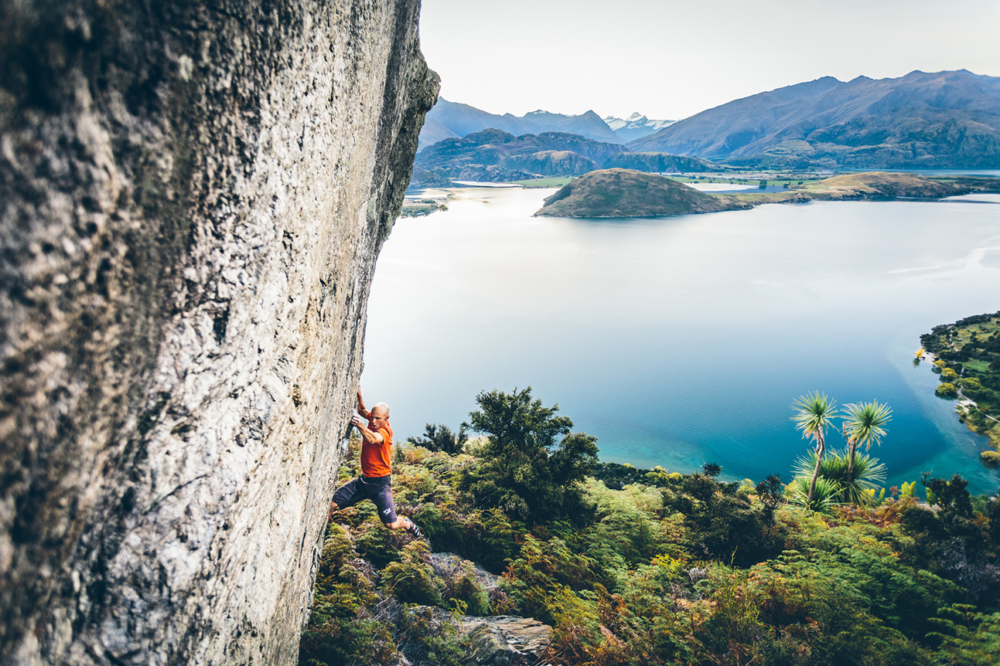
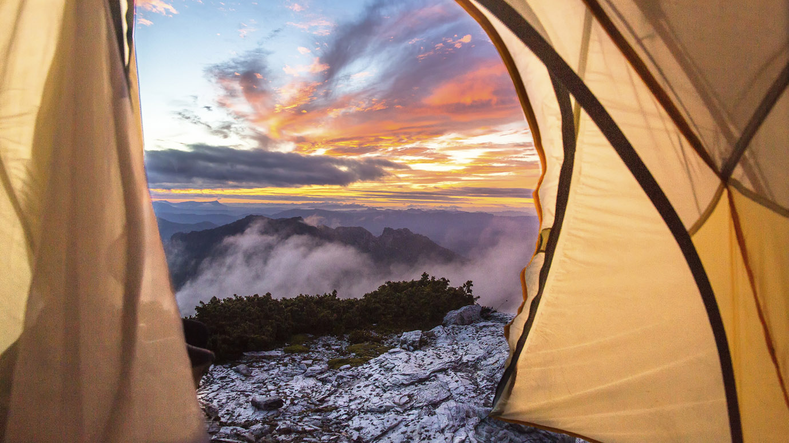

WKND Adventures
Bold Stories. Real Life. Wild Places.
We document the people, routes, and moments that make the outdoors worth protecting.

Sub-10 lb: What to Cut, What to Keep
An honest guide to ultralight backpacking — where the weight actually lives, what to cut, what to keep, and when to ignore all of it.
Browse by Activity
Quick Answers
Start Here
Not sure where to start?
WKND Adventures is built for people who are serious about the outdoors — but it's not a gatekeeping exercise. If you're planning your first multi-day route, you belong here. If you're a seasoned alpinist looking for detailed beta on a route you haven't done, you belong here too. The depth of the archive is the point. If you know roughly what you want to do but haven't committed to a specific route yet, the Destinations section is the fastest way in. It's organised by region, and every destination page links to every relevant route, gear guide, and field note we've published for that area. Start broad, then go deep.
How We Work
We go first
Every route published on WKND Adventures has been completed by a WKND contributor before a word is written for public consumption. No desk research. No secondhand accounts aggregated from trip reports on other platforms. If the trail doesn't go, or the permit system has changed, or the hut is closed for the winter — we find out in the field, not in the edit. It costs more time. It produces better information.
We document everything
A WKND trip report is not a summary. It's a working document: full gear lists with weights and model numbers, weather windows with specific dates and conditions, permit processes with links and lead times, camp notes with coordinates, water sources, and honest assessments of ground quality. The kind of detail that actually changes how you plan. We write for the reader who is three weeks out and needs to know exactly what they're getting into.
We update our work
Routes change. Bridges wash out. Access agreements expire. Fire closures redraw the map. Trail conditions that were accurate in September can be dangerous in April. Every report on WKND carries a last-verified date — and when conditions shift materially, we go back, revisit the route, and update the record. We consider outdated advice on active terrain a form of negligence. We take that seriously.
Ready to plan your next adventure?
Gear up, read the briefing, then go. Every route you need is here.